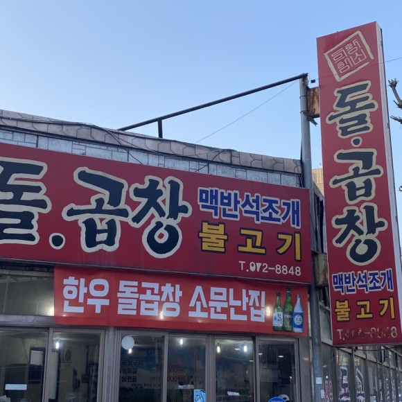
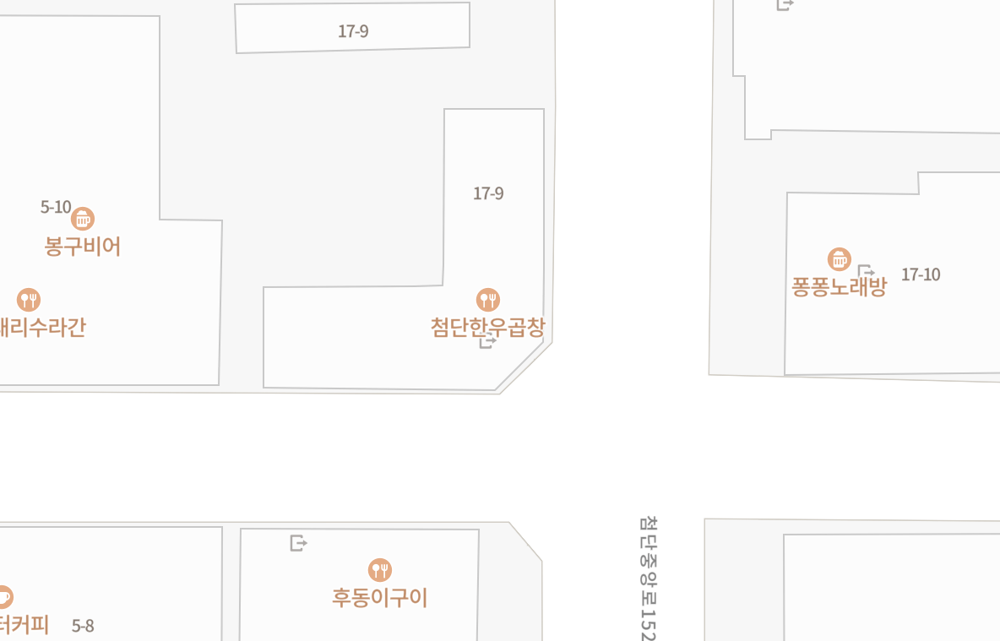
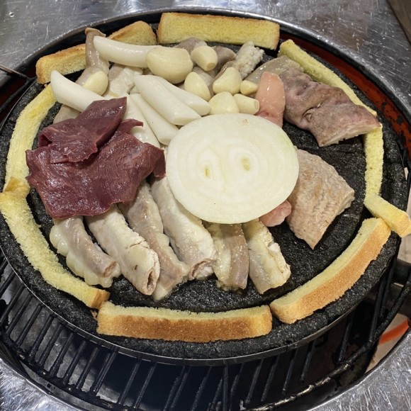
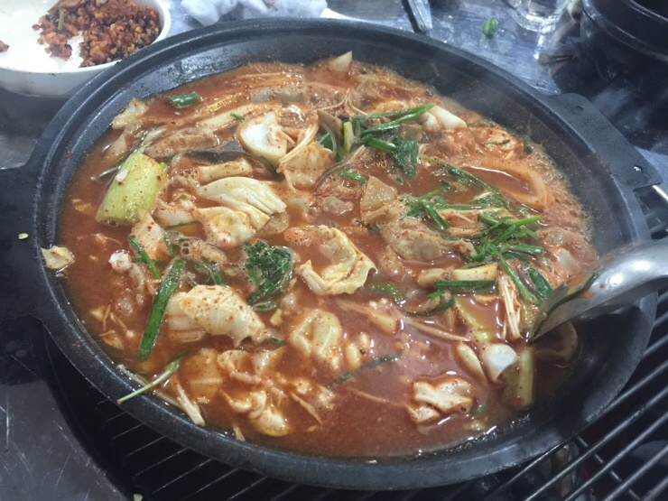

한우돌곱창

주소
광주 광산구 첨단중앙로152번길 5-10
메뉴
<메뉴판>

돌곱창구이 16000원
기본적인 곱창구이. 돌판에 구워주는 장점이 있지만 리뷰를 보니 그리 깔끔하진 않은것 같다.

곱창전골 14000원
추천메뉴. 지인이 강력하게 추천해준 메뉴. 일반적인 구이가 아닌 전골을 추천해주었다.
기타사항
일단 첨단에 위치해 있어 거리가 멀다는 단점이 있다. 그리고 리뷰를 보니 위생면에서 그리 높은 점수를 받진 못하는것같다. 위생을 굉장히 중요시하는 사람에게는 좋은 식당이 아닐수 있을거란 생각이 들었다.